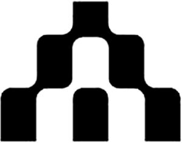

Trade Mark Journal No.2025/050 12 December 2025
WO0000001888348 (9,35,36,42)
Office of origin: European Union Intellectual Property Office (EUIPO)
Date of International Registration:19 September 2025
Date of designation in the UK:
19 September 2025

- Class 9
- Software for treasury management; accounting software; software for e-payment between users; mobile software applications for cash management, accounting and e-payment between users; computer communication software to allow customers to access bank account information and transact bank business; downloadable computer software for use as an application programming interface (API) for cash management, accounting and e-payment between users; computer software; collaboration software platforms.
- Class 35
- Business management; business management assistance in the banking and financial sectors; administrative processing of financial payments and transactions for others; computerised accounting; business support in relation to financial payments and transactions; computerised file management; computerized file management; accountancy, book keeping and auditing; management accountancy; providing an on-line computer web site that provides account management, accounting features and related reference information; business information; provision of computerised data relating to business; collecting information for business; business project management; accounting, book-keeping and audit accounting.
- Class 36
- Processing of electronic payments or card payments; electronic payment services; financial issuance and handling of materialised means of payment; providing of information in relation to banking and financial operations; rental of equipment for banking card and electronic payment card operations; financial information services; processing of payment transactions; operation of funds; processing of electronic payments; treasury management services; computerised payment services; financial management; providing of financial advice and information; providing an on-line computer web site that provides financial transaction data and related reference information; providing an online computer web site that provides financial reporting and related reference information; financial banking; information services relating to banking; processing of payments for banks; conducting of financial transactions.
- Class 42
- Software design and development; installation of computer software; maintenance of computer software; updating of computer software; rental of computer software; software as a service [SaaS]; design, development and updating of software for use in financial transactions, cash management and e-payment management; platform as a service (PaaS) featuring software platforms enabling financial transactions, cash management and e-payment management; software as a service (SaaS) services featuring cloud-based software for accounting, financial management, and treasury management; software as a service (SaaS) services featuring a ledger and payment platform for initiating, monitoring, and reconciling payments via an application program interface that integrates with software-based services provided by banking institutions to enable live account access; software as a service (SaaS) services featuring a ledger and payment platform for financial planning, financial management, and mitigation of operational and financial risk via an application program interface that integrates with software-based services provided by banking institutions to enable live account access; software-as-a-service (SaaS) services featuring software to allow customers to access bank and other financial account information and transmit financial and transactional information to banking and other financial institutions; software-as-a-service (SaaS) services featuring software for management and consolidation of business and financial data; software as a service [SAAS] featuring software for use in keeping online accounting records; design, development and updating of software used for accounting, financial management, and treasury management; maintenance of on-line databases for others; software as a service [SAAS] featuring software for use in database management and database analysis in relation to the following fields: accounting and treasury management.
Atlar AB
Representative: SETTERWALLS ADVOKATBYRÅ AB, Sturegatan 10, SE-111 46 Stockholm, SWEDEN